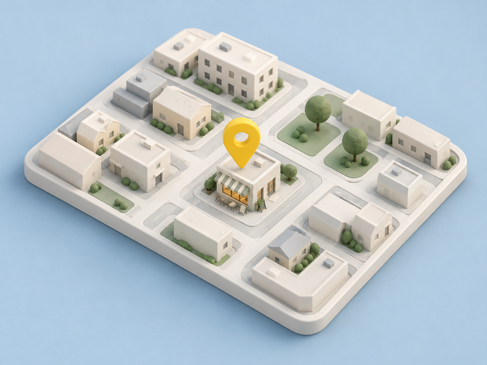

Local Atlas
Ask a business once.
Reuse the answer.
CALL-E asks the question. Local Atlas saves a dated answer and a staff quote for the next visitor.
Includes a prompt, result schema and setup guide.
By Omar Miri · MIT licensed
Simulation reviewed. Live calling unverified.